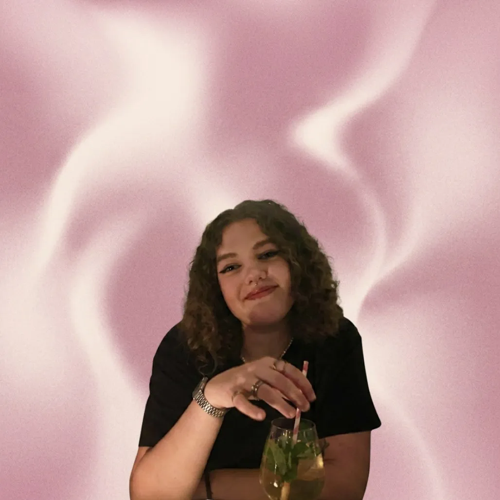

Om Mig
Hvorfor Multimediedesign?
Lige siden jeg begyndte at spille videospil i 2016, har jeg været meget interesseret i IT og kodning, men jeg har også altid elsket det visuelle og kreative. Så på trods af at jeg har absolut ingen erfaring, virkede multimediedesign meget spændende og lige noget for mig.

Hvad har jeg lært?
HTML og struktur
Jeg lærte at opbygge sider med semantisk HTML og skabe en tydelig struktur.
CSS og design
Jeg lærte at arbejde med layout, farver, typografi, flexbox, grid og responsivt design.
Figma og wireframes
Jeg lærte at planlægge design før kodning og bruge wireframes til at skabe overblik.
JS og interaktion
Jeg lærte at tilføje små interaktioner som burger-menu, SVG'er, sliders og klikbare elementer.
Min erhvervserfaring
Paradis-is
2018-2018
Børnehave
2022-2022
Coop 365
2023-2024
Jumpyard
2024-